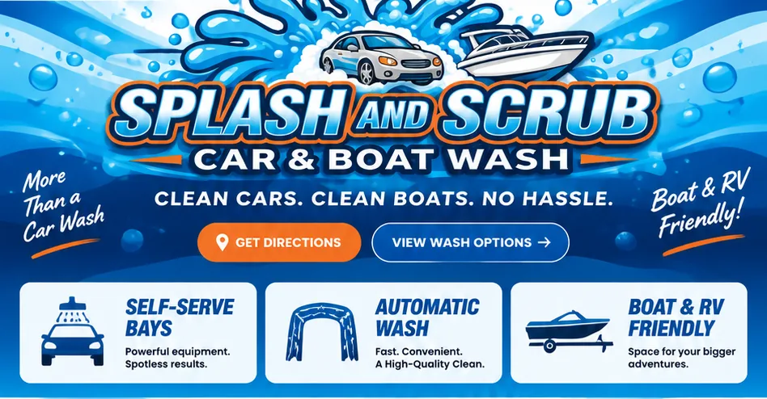
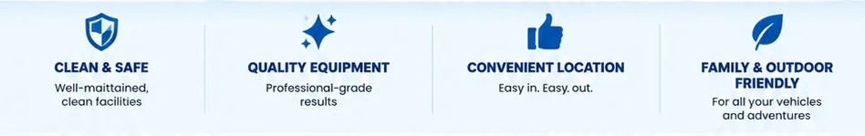
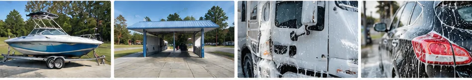
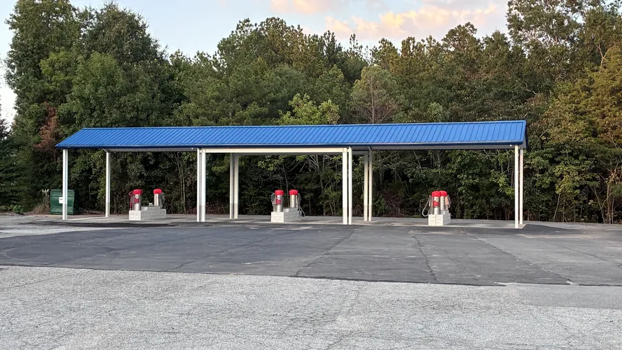
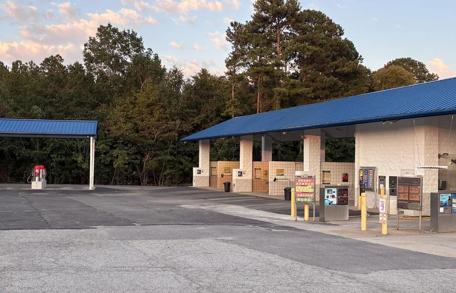
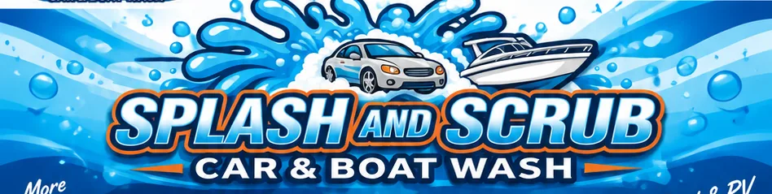
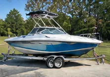
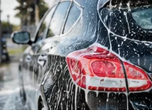

Get directionsView wash optionsSelf-serve baysAutomatic washBoat and RV friendly




CLEAN CARS.CLEAN BOATS.NO HASSLE.
At Splash and Scrub, we make it easy to keep your car, boat, RV, or trailer looking its best. Whether you prefer a hands-on wash in our self-serve bays or the speed and convenience of our automatic wash, we’ve got you covered.
Our services →CLEAN & SAFE
Well-maintained, clean facilities
QUALITY EQUIPMENT
Professional-grade results
CONVENIENT LOCATION
Easy in. Easy out.
FAMILY & OUTDOOR FRIENDLY
For all your vehicles and adventures


FIND US TODAY
Conveniently located and ready to help you keep your vehicles looking their best.
1016 Rauch-Metz Rd
Irmo, SC 29063
Open 24 hours, 7 days a week
Get directions →